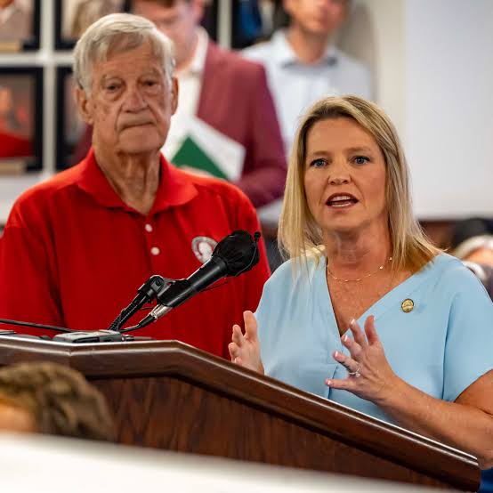

Republican · Alabama House District 15
Leigh Hulsey
State Representative, House District 15


Leigh Hulsey has represented House District 15 in the Alabama House of Representatives since 2022. A lifelong Shelby County resident, small business owner and mother of three, she is a conservative voice for the families of Helena, McCalla, Bessemer and western Hoover.

House District 15
About Leigh
Leigh Hulsey has lived in Shelby County her entire life. She grew up in Pelham, graduated from Pelham High School, and earned her degree in human development and family studies from Auburn University.
She and her husband Dennis have been married for more than 27 years and have three grown children. Leigh spent twelve years at home raising her family before returning to work as a paralegal and later opening her own small business, CrossFit Alabaster. She has also served as president of the Alabaster Business Alliance.
Before her election to the Legislature, Leigh served on the Helena City Council, where she worked on municipal budgets, economic development, and the planning and funding of road projects. She was elected to the Alabama House in November 2022.
Read Her Full BiographyThe citizens of District 15 deserve a God-fearing, qualified, conservative, pro-jobs leader fighting for them.
Leigh Hulsey

In the District
Showing up for District 15
From first responders to small business owners, Leigh works for the families and neighborhoods of Helena, McCalla, Bessemer and western Hoover.
On the Issues
The priorities Leigh is working on for House District 15.
Education
Leigh sponsored the FOCUS Act, which removed cell phones from Alabama classrooms bell to bell. She continues to support policies that put teachers and students ahead of distractions.
Jobs and the Economy
As a small business owner, Leigh understands what it takes to meet a payroll. She supports responsible tax policy and incentives that deliver a real return for Alabama communities.
Public Safety
Leigh supports Alabama's law enforcement officers and first responders, and works with local departments to secure the equipment and funding they need to protect our communities.
Roads and Infrastructure
House District 15 is one of the fastest-growing areas of the state. Leigh works to make sure road and infrastructure projects here receive the attention and funding they require.
Life and Family Values
Leigh is pro-life and a strong supporter of parental rights and the Second Amendment. She believes government should not stand between families and the decisions they make.
Veterans and Military Families
Leigh supports active-duty service members, military dependents and veterans, and works to reduce the barriers military families face when they move to Alabama.
Leigh's Record
- Sponsored the FOCUS Act (HB166), prohibiting student cell phone use in Alabama public schools. Signed into law in May 2025.
- Sponsored House Bill 399, limiting the maximum tax abatement period for data processing centers. Enacted in April 2026.
- Secured more than $360,000 in grant funding for community needs and local projects across House District 15.
- Elected caucus freshman representative by House Republicans in January 2023, giving first-term members a voice in leadership.
- Served on the Helena City Council before her election to the Alabama House of Representatives.
District 15
House District 15 includes portions of Helena, McCalla, Bessemer and western Hoover, spanning parts of Shelby and Jefferson counties. It is among the fastest-growing areas of Alabama, and that growth places real demands on roads, schools and public safety.
Leigh works directly with mayors, school leaders, department heads and civic groups across the district to identify local needs and pursue the funding to meet them.

Latest News
Stay Informed
Sign up for updates from the campaign. We will not share your email address.
Thank You
You have been added to the campaign email list.